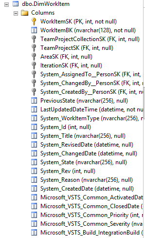
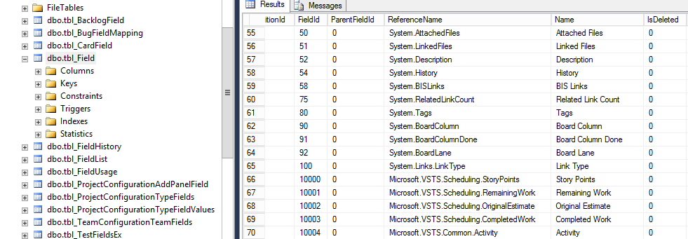
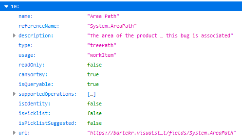

An assignment: using data from the Excel file (sample data below) insert them into TFS (on-premises). Automatically. Start. You have three months from now. Or a few hours.
The original spreadsheet contains 16 records - the header and 15 tasks with 11 columns (skipped here, 8 is enough).
| Work item type | Title | Activity | Area Path | Assigned To | Description | Original Estimate | Completed Work |
|---|---|---|---|---|---|---|---|
| Task | Title1 | Requirements | Proj1\Team1 | P Name1 | Description 1 | 10 | 10 |
| Task | Title2 | Maintenance | Proj1\Team1 | P Name2 | Description 2 | 5 | 5 |
Additionally, the tasks should be assigned to the designated User Story: http://tfsserveraddress/tfs/CollectionName/ProjectName/_workitems/edit/12345 and the Sprint "\Current\Sprint 3".
In my project, we work with TFS Server 2015. To talk with it using C# I use the Microsoft.TeamFoundationServer.ExtendedClient package (stable version 16.153.0 at the time of writing). Not everything is possible to use for TFS 2015 (e.g. dashboard editing, as it was introduced for the later TFS API versions), but interacting with the WorkItems works.
For the prototype, I will convert the data from the spreadsheet to the JSON format, and read it as a text in the application. Why JSON? Because I can! Also, because I’m lazy and I will use JsonConvert.Deserialize() to prepare the DataSet. I like working with DataSets. I will write a separate class with a method that adds all WorkItems from the file
So, to begin with - File > New > Project / Visual C# / Console App (.Net Framework). I use .NET 4.6.1. Then in the Solution Explorer: right-click on the project, select Add > Class … and create a new file Workitems.cs. OK, I have two files in the project (Program.cs and Workitems.cs), both contain only the template stuff. First - in the Main() method, I will set the TFS server address - where I want to insert the data, and the location of the source file.
To connect to the TFS server, I use the TfsTeamProjectCollectionFactory.GetTeamProjectCollection() method, where I provide only the Uri - address of the server, but with the collection name. The location of the file is a full path. So, the program itself is easy - the Main() method looks like below:
using Microsoft.TeamFoundation.Client;
using System;
(...)
static void Main(string[] args)
{
// TFS Server address, with the collection name
Uri tfsServerUri = new Uri("http://tfsserveraddress/tfs/CollectionName");
// connect to TFS
TfsTeamProjectCollection tfs = TfsTeamProjectCollectionFactory.GetTeamProjectCollection(tfsServerUri);
//AddWorkItems(tfs);
string filePath = @"C:\tmp\DataImport.json";
Workitems mwi = new Workitems();
mwi.AddFromFile(tfs, filePath);
}
I use no authentication methods, as TFS is on-premises and uses domain authentication. When I run the program, my credentials are magically passed to the TFS server during execution of the GetTeamProjectCollection() method.
The skeleton of the application is ready. Now, to the
TFS WorkItem interaction
TFS/Azure DevOps API is built around the REST API concept and uses clients to work with the different aspects of the ecosystem. A different client for the Builds, a different for the Releases, a different one for the WorkItems, and so on. For the WorkItems I will use WorkItemTrackingHttpClient (tfs is a previously acquired connection to the collection):
WorkItemTrackingHttpClient witClient = tfs.GetClient<WorkItemTrackingHttpClient>();
To create or update a WorkItem I have to use the JsonPatchDocument(), which contains one or more JsonPatchOperation() elements. Each of JsonPatchOperations must contain at least three of four elements: Operation, Value, and Path. The fourth - optional - is From, but it’s used for the move/copy operations.
There’s a catch - in lots of the examples and tutorials I’ve seen they show one JsonPatchDocument containing one JsonPatchOperation - like:
JsonPatchDocument patchDocument = new JsonPatchDocument();
patchDocument.Add(
new JsonPatchOperation()
{
Operation = Operation.Add,
Path = "/fields/System.Title",
Value = title
}
);
The WorkItem created using code like the above will contain only the title. If I want to add more information about the task, like iteration, who is assigned to the task, the number of hours planned and completed, etc. - I have to add the separate JsonPatchOperation for each one of them - like:
JsonPatchDocument patchDocument = new JsonPatchDocument();
patchDocument.Add(
new JsonPatchOperation()
{
Operation = Operation.Add,
Path = "/fields/System.Title",
Value = "Title1"
}
);
patchDocument.Add(
new JsonPatchOperation()
{
Operation = Operation.Add,
Path = "/fields/System.Description",
Value = "Description 1"
}
);
or in one go:
JsonPatchDocument patchDocument = new JsonPatchDocument(
new JsonPatchOperation()
{
Operation = Operation.Add,
Path = "/fields/System.Title",
Value = "Title1"
},
new JsonPatchOperation()
{
Operation = Operation.Add,
Path = "/fields/System.Description",
Value = "Description 1"
}
);
Great, I have a pattern I can use. Just one small thing - how can I find the field names? The two above - System.Description and System.Title are taken from the examples, but how can I find the name for CompletedWork? I can use several sources:
- TFS and Azure DevOps Server (only on-premises version) have an additional Warehouse mechanism - a database with dimensions and facts that has the data from all the collections on the server. The
dbo.DimWorkitemtable holds the columns with the names that correspond to the paths. The downside - not all the fields have to be in the warehouse.
- In the collection’s database, there is a table
dbo.tbl_Fieldswith all the fields for the collection
- I can use Azure DevOps and an API link, like https://azuredevopsserver/Collection/_apis/wit/fields or https://azuredevopsserver/Collection/Project/_apis/wit/fields, take a look at all the entries and use the
referenceNamevalue; the link does not work in TFS, I had to use Azure DevOps / Azure DevOps Server
- In the documentation, there’s an example that shows the return value of the created WorkItem, and there’s a whole list of field names.
{kind=link}
{kind=link}
Having the names for the field path I can either modify the Excel file, so the header will contain the proper field names, or I can do some sort of mapping in the code (like Title -> System.Title). As it’s the prototype, I will use the former and change the file directly. Then I will save it as the CSV file - it’s still a prototype, so I will prepare the input data as I see them fit.
The Data0.csv file contains the source saved as the CSV file. After tweaking (column names as the field names) the source is saved as the Data1.csv. In Poland, CSV files have not a comma, but a semicolon as the separator. I use PowerShell to convert it to JSON:
Import-Csv -Path C:\\tmp\\Data1.csv -Delimiter ";" | ConvertTo-Json | Set-Content C:\\tmp\\Data1.json
The output looks like below (notice double backslash instead of one, as in the source):
[
{
"System.Title": "Title1",
"System.Activity": "Requirements",
"System.AreaPath": "Proj1\\Team1",
"System.AssignedTo": "P Name1",
"System.Description": "Description 1",
"Microsoft.VSTS.Scheduling.OriginalEstimate": "10",
"Microsoft.VSTS.Scheduling.CompletedWork": "10",
"IterationPath": "\\Current\\Sprint 3"
},
{
"System.Title": "Title2",
"System.Activity": "Maintenance",
"System.AreaPath": "Projt1\\Team1",
"System.AssignedTo": "P Name2",
"System.Description": "Description 2",
"Microsoft.VSTS.Scheduling.OriginalEstimate": "5",
"Microsoft.VSTS.Scheduling.CompletedWork": "5",
"IterationPath": "\\Current\\Sprint 3"
}
]
The input is ready, now to
The WorkItems creation
I will write a method in the Workitems class:
public void AddFromFile(TfsTeamProjectCollection tfs, string filePath)
It will use the WorkItemTrackingHttpClient mentioned above. I will also set some parameters as the variables
WorkItemTrackingHttpClient witClient = tfs.GetClient<WorkItemTrackingHttpClient>();
string witType = "Task";
string projectName = "Project1";
I also wrote I will use JsonConvert.DeserializeObject() to convert JSON data to the DataSet, so I read the Data1.json. Also - I have to give a name to the dataset, so I concatenate it with ‘Tasks’ and prepare one JSON element with an array of the entries:
string jsonTasksSrc = File.ReadAllText(filePath);
string jsonTasks = "{'Tasks' : " + jsonTasksSrc + "}";
DataSet x = JsonConvert.DeserializeObject(jsonTasks);
I have the DataSet, so I can read the DataTable, iterate over it, and prepare JsonPathOperations with the fields - each DataTable column contains names and values.
foreach (DataRow r in x.Tables["Tasks"].Rows)
{
JsonPatchDocument wit = new JsonPatchDocument();
foreach (DataColumn c in r.Table.Columns)
{
string sPath = "/fields/" + c.ColumnName;
string sValue = r[c.ColumnName].ToString();
wit.Add(new JsonPatchOperation()
{
Path = sPath,
Operation = Operation.Add,
Value = sValue
});
}
}
The last thing - adding the parent User Story. I found the answer by Marina on StackOverflow - use /relations/- as the path with the relation defined as Hierarchy-Reverse:
string relation = @"{
'rel' : 'System.LinkTypes.Hierarchy-Reverse',
'url' : 'http://tfsserveraddress/tfs/CollectionName/ProjectName/_workitems/edit/12345'
}";
In this case - as it’s a JSON construct - the Value of the JsonPathOperation should be a JToken instead of just a string, so I have to cast it:
wit.Add(new JsonPatchOperation()
{
Path = "/relations/-",
Operation = Operation.Add,
Value = JToken.Parse(relation)
});
Now I can create the WorkItem:
WorkItem w = witClient.CreateWorkItemAsync(wit, projectName, witType).Result;
The last thing - the WorkItem is created as New. I have to set it as closed because I report the finished tasks:
_ = witClient.UpdateWorkItemAsync(p, w.Id.Value).Result;
The underscore means that I’m not interested in the result (during the debugging process I checked that it works) so I discard it.
And that’s it! It looks like it’s working.
The next steps - checking how it works with Azure DevOps in Azure and a bit more of parametrisation. Also, I have to verify if I have to pass a full URL for the parent WorkItem (User Story) and if it’s possible to insert the task with the Closed status (not possible form the GUI - the only option is New). But that’s a subject for a different blog post.
The code is available on GitHub.